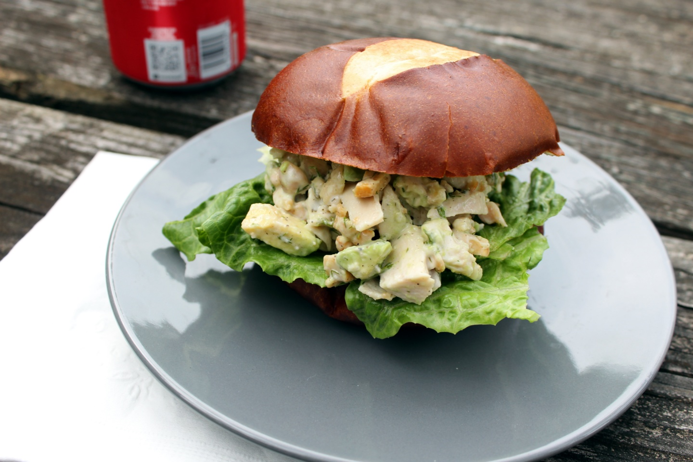

Avocado Ranch Chicken Salad

Description
A chicken salad with avocado, ranch, and cashews. Goes best on a pretzel bun.
Ingrediants
- 1 pound diced cooked chicken breast meat
- ½ cup chopped cashews
- ½ medium avocado, diced
- 2 ½ tablespoons light ranch dressing
- 2 ½ tablespoons minced fresh dill
- salt and ground black pepper to taste
Directions
Step 1
Mix chicken, cashews, avocado, ranch dressing, dill, salt, and pepper together in a bowl. Chill for at least 30 minutes before serving.